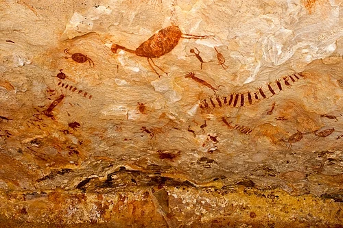
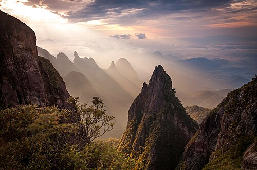
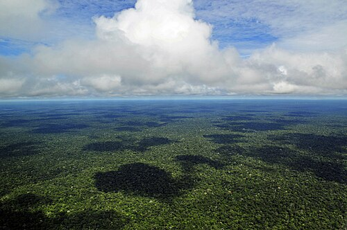
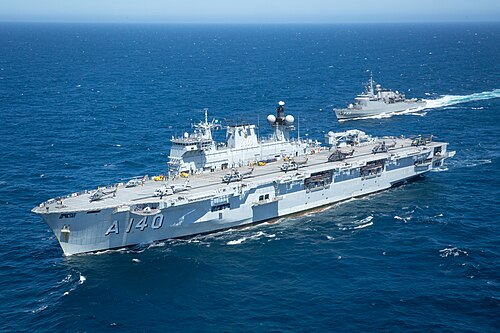
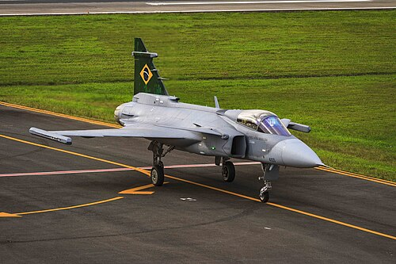
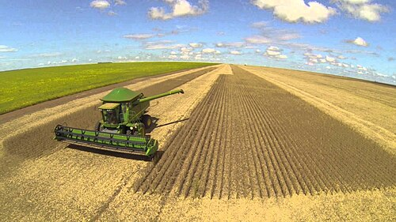
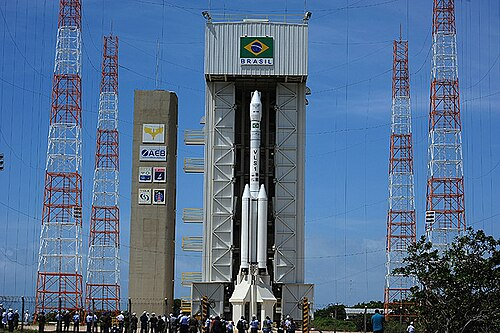
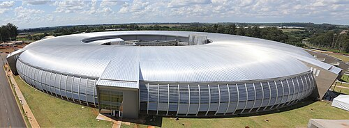
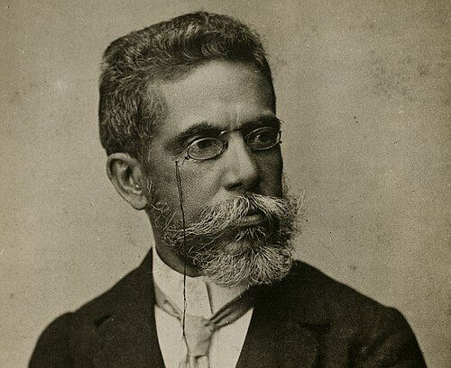

Tudo Sobre o Brasil
Brasil (localmente [bɾa'ziw]), oficialmente República Federativa do Brasil, é um país da América, localizado especificamente na América do Sul, sendo o maior da região e também da América Latina, além de ser o quinto maior do mundo em área territorial (equivalente a 47,3% do território sul-americano), com cerca de 8,5 milhões de quilômetros quadrados, e o sétimo maior em população (com 213 milhões de habitantes, em julho de 2025). É o único país do continente americano onde se fala majoritariamente a língua portuguesa e o maior país lusófono do planeta, além de ser uma das nações mais multiculturais e etnicamente diversas, em decorrência da forte imigração oriunda de variados locais do mundo. Sua atual constituição, promulgada em 1988, concebe o Brasil como uma república federativa presidencialista, formada pela união de 26 estados, do Distrito Federal e dos 5 571 municípios.
Etimologia
O nome Brasil tem origem no termo medieval brasile, empregado na Europa desde pelo menos o século XII para designar uma tintura vermelha de alto valor comercial, obtida inicialmente a partir de madeiras asiáticas, em especial a Caesalpinia sappan. Do ponto de vista etimológico, o vocábulo está associado ao latim vulgar brasa, em alusão à coloração intensa do pigmento.As primeiras denominações oficiais atribuídas pela Coroa portuguesa ao território americano foram Terra de Vera Cruz e Terra de Santa Cruz. Contudo, já no início do século XVI, mapas europeus e documentos náuticos registravam topônimos associados ao termo Brasil, como Rio de Brasil. Em 1548, a criação do Estado do Brasil por João III de Portugal consolidou oficialmente o uso do nome, que foi mantido nas denominações políticas subsequentes até a atual República Federativa do Brasil.
História
Estima-se que os primeiros seres humanos tenham ocupado a região que compreende o atual território brasileiro há cerca de 60 mil anos. Quando encontrada pelos europeus em 1500, a América do Sul tinha sua costa oriental habitada por cerca de dois milhões de nativos, do norte ao sul.
A população ameríndia era repartida em grandes nações indígenas compostas por vários grupos étnicos entre os quais se destacam os grandes grupos tupi-guarani, macro-jê e aruaque. Os primeiros eram subdivididos em guaranis, tupiniquins, tupinambás, entre inúmeros outros.

Geografia
O território brasileiro é cortado por dois círculos imaginários: a Linha do Equador, que passa pela embocadura do Amazonas, e o Trópico de Capricórnio, que corta o município de São Paulo. O país ocupa uma vasta área ao longo da costa leste da América do Sul e inclui grande parte do interior do continente, compartilhando fronteiras terrestres com Uruguai ao sul; Argentina e Paraguai a sudoeste; Bolívia e Peru a oeste; Colômbia a noroeste e Venezuela, Suriname, Guiana e com o departamento ultramarino francês da Guiana Francesa ao norte. O país compartilha uma fronteira comum com todos os países da América do Sul, exceto Equador e Chile.
O Brasil também engloba uma série de arquipélagos oceânicos, como Fernando de Noronha, Atol das Rocas, São Pedro e São Paulo e Trindade e Martim Vaz. O seu tamanho, relevo, clima e recursos naturais fazem do Brasil um país geograficamente diverso.

Biodiversidade
A grande extensão territorial do Brasil abrange diferentes ecossistemas, como a Floresta Amazônica, reconhecida como tendo a maior diversidade biológica do mundo. Os rios amazônicos fornecem uma variedade de habitats, incluindo pântanos e riachos, cada um abrigando diferentes tipos de vida selvagem. A mata Atlântica e o cerrado, sustentam também grande biodiversidade, além da caatinga, fazendo do Brasil um país megadiverso. No sul, a floresta de araucárias cresce sob condições de clima temperado.
O patrimônio natural do Brasil está seriamente ameaçado pela pecuária e agricultura, exploração madeireira, mineração, reassentamento, desmatamento, extração de petróleo e gás, a sobrepesca, comércio de espécies selvagens, barragens e infraestrutura, contaminação da água, fogo, espécies invasoras e pelos efeitos do aquecimento global. A construção de estradas em áreas de floresta, tais como a BR-230 e a BR-163, abriu áreas anteriormente remotas para a agricultura e para o comércio; barragens inundaram vales e habitats selvagens e minas criaram cicatrizes na terra e poluíram a paisagem. Em dezembro de 2016, conforme estudos da Embrapa, a vegetação nativa preservada cobria 61% do território brasileiro. A agricultura ocupava 8% do território nacional enquanto as pastagens cobriam 19,7%. Em 2014, segundo o IBGE, o Brasil tinha 3 299 espécies ameaçadas de extinção.

Urbanização
Os maiores aglomerados urbanos do Brasil, de acordo com o censo do IBGE para 2022, são as conurbações de São Paulo (com 20 673 280 habitantes), Rio de Janeiro (11 760 550), Belo Horizonte (4 963 704), Brasília (3 858 760) e Recife (3 783 639). Existem também grandes concentrações urbanas no interior do país. Quase todas as capitais são as maiores cidades de seus estados, com exceção de Vitória, capital do Espírito Santo, e Florianópolis, a capital de Santa Catarina.
| Posição | Localidade | Unidade Federativa | População |
|---|---|---|---|
| 1 | São Paulo | São Paulo | 22.500.000 |
| 2 | Rio de Janeiro | Rio de Janeiro | 12.000.000 |
| 3 | Belo Horizonte | Minas Gerais | 5.000.000 |
| 4 | Brasília | Distrito Federal - Goiás | 4.500.000 |
| 5 | Recife | Pernambuco | 4.250.000 |
| 6 | Porto Alegre | Rio Grande do Sul | 4.000.000 |
| 7 | Fortaleza | Ceará | 3.750.000 |
| 8 | Curitiba | Paraná | 3.500.000 |
| 9 | Salvador | Bahia | 3.500.000 |
| 10 | Goiânia | Goiás | 3.000.000 |
Forças Armadas
As Forças Armadas do Brasil compreendem o Exército Brasileiro, a Marinha do Brasil e a Força Aérea Brasileira e são a maior força militar da América Latina, a segunda maior de toda a América. O Brasil também é uma das nações com as maiores capacidades bélicas do mundo. O país foi considerado a 9ª maior potência militar do planeta em 2021. As polícias militares estaduais e os corpos de bombeiros militares são descritas como forças auxiliares e reservas do Exército pela Constituição, mas sob o controle de cada estado e de seus respectivos governadores.


Ecnonomia
O Brasil é a maior economia da América Latina, a segunda da América (atrás apenas dos Estados Unidos) e a nona maior do mundo em PIB nominal (tendo alcançado sua posição mais alta em 2011, na sexta colocação); em paridade do poder de compra, ocupa o oitavo lugar, de acordo com o Fundo Monetário Internacional e o Banco Mundial.
O país tem uma economia mista capitalista com vastos recursos naturais. Estima-se que a economia brasileira se irá tornar uma das cinco maiores do mundo nas próximas décadas. Ativo em setores como mineração, manufatura, agricultura e serviços, o Brasil tem uma força de trabalho de mais de 120 milhões de pessoas (6.ª maior do mundo) e desemprego de 11,7% (38.º no mundo). O Brasil vem ampliando sua presença nos mercados financeiros e de commodities internacionais e é um BRICS. O Brasil tem sido o maior produtor mundial de café dos últimos 150 anos e tornou-se o quarto maior mercado de automóveis do mundo.
O país participa de diversos blocos econômicos como o Mercado Comum do Sul (Mercosul), o G20 e o Grupo de Cairns, e sua economia corresponde a três quintos da produção industrial da economia sul-americana. O Brasil comercializa regularmente com mais de uma centena de países, sendo que 74% dos bens exportados são manufaturas ou semimanufaturas. Os maiores parceiros são: União Europeia, Mercosul, América Latina, Ásia e Estados Unidos.
A indústria de automóveis, aço, petroquímica, computadores, aeronaves e bens de consumo duradouros contabilizam 30,8% do produto interno bruto brasileiro. A atividade industrial está concentrada geograficamente nas regiões metropolitanas de São Paulo, Rio de Janeiro, Curitiba, Campinas, Porto Alegre, Belo Horizonte, Manaus, Salvador, Recife e Fortaleza. Entre as maiores empresas do Brasil estão Itaú Unibanco, Bradesco, Caixa Econômica Federal, Banco do Brasil e BTG Pactual (setor bancário); Braskem, Grupo Ultra e Petrobras (setor petrolífero); Vale S.A. (mineração); WEG S.A. (engenharia elétrica e automação industrial); Ambev (bebidas); JBS e Marfrig (setor alimentício); Suzano (papel e celulose); Eletrobras e CPFL Energia (transmissão de energia); Gerdau e Companhia Siderúrgica Nacional (metalurgia); Cosan e Raízen (etanol), entre outras.

Ciencia e Tecnologia
A pesquisa tecnológica no Brasil é em grande parte realizada em universidades públicas e institutos de pesquisa. Alguns dos mais notáveis polos tecnológicos do Brasil são os institutos Oswaldo Cruz e Butantã, o Comando-Geral de Tecnologia Aeroespacial, a Empresa Brasileira de Pesquisa Agropecuária (EMBRAPA) e o Instituto Nacional de Pesquisas Espaciais (INPE). Dono de relativa sofisticação tecnológica, o país desenvolve desde submarinos até aeronaves, além de estar presente na pesquisa aeroespacial, possuindo um Centro de Lançamento de Veículos Leves e sendo o único país do Hemisfério Sul a integrar a equipe de construção da Estação Espacial Internacional (ISS).
O Brasil tem o mais avançado programa espacial da América Latina, com recursos significativos para veículos de lançamento, e fabricação de satélites. Em 14 de outubro de 1997, a Agência Espacial Brasileira assinou um acordo com a NASA para fornecer peças para a ISS. No entanto, depois de quase dez anos sem conseguir cumprir o contrato de fornecimento, foi excluído do programa em maio de 2007. Este acordo, contudo, possibilitou ao Brasil treinar seu primeiro astronauta. Em 30 de março de 2006 o tenente-coronel Marcos Pontes, a bordo do veículo Soyuz, tornou-se o primeiro astronauta brasileiro e o terceiro latino-americano a orbitar o planeta Terra.


Literatura

A literatura brasileira surgiu a partir da atividade literária incentivada pelos jesuítas durante o século XVI. Nos séculos posteriores, o barroco desenvolveu-se no nordeste do país nos séculos XVI e XVII e o arcadismo se expandiu no século XVIII na região das Minas Gerais.
No século XIX, o romantismo brasileiro afetou a literatura nacional, tendo como seu maior nome José de Alencar. Após esse período, o realismo brasileiro expandiu-se pelo país, principalmente pelas obras de Machado de Assis, poeta e romancista, cujo trabalho se estende por quase todos os gêneros literários e que é amplamente considerado o maior escritor brasileiro.
Bastante ligada, de princípio, à literatura metropolitana, ela foi ganhando independência com o tempo, iniciando o processo durante o século XIX com os movimentos romântico e realista. Atingiu o ápice com a Semana de Arte Moderna em 1922, caracterizando-se pelo rompimento definitivo com as literaturas de outros países, formando-se, portanto, a partir do Modernismo e suas gerações as primeiras escolas de escritores verdadeiramente independentes. São dessa época grandes nomes como Manuel Bandeira, Carlos Drummond de Andrade, Guimarães Rosa, João Cabral de Melo Neto, Clarice Lispector, Cecília Meireles e Lygia Fagundes Telles, a primeira mulher brasileira a ter sido indicada ao prêmio Nobel de Literatura.
Esportes
O futebol é o esporte mais popular no Brasil.[388] A Seleção Brasileira de Futebol é a única no mundo a participar de todas as edições da Copa do Mundo FIFA, sendo vitoriosa cinco vezes: 1958, 1962, 1970, 1994 e 2002. Voleibol, tênis de mesa, natação, futsal, capoeira, skate, surfe, judô e atletismo também estão entre os esportes mais praticados no país.
No automobilismo, pilotos brasileiros ganharam o campeonato mundial de Fórmula 1 oito vezes: Emerson Fittipaldi, em 1972 e 1974; Nelson Piquet, em 1981, 1983 e 1987; e Ayrton Senna, em 1988, 1990 e 1991. O circuito localizado em São Paulo, Autódromo José Carlos Pace, organiza anualmente o Grande Prêmio do Brasil de Fórmula 1.
O Brasil já organizou eventos esportivos de grande escala: sediou as Copas do Mundo de 1950, na qual foi o vice-campeão, e 2014, quando ficou em quarto lugar. Em 1963, a cidade de São Paulo foi sede dos Jogos Pan-Americanos e Porto Alegre da Universíada de Verão. A cidade do Rio de Janeiro sediou os Jogos Pan-Americanos de 2007 e também os Jogos Olímpicos de Verão de 2016.